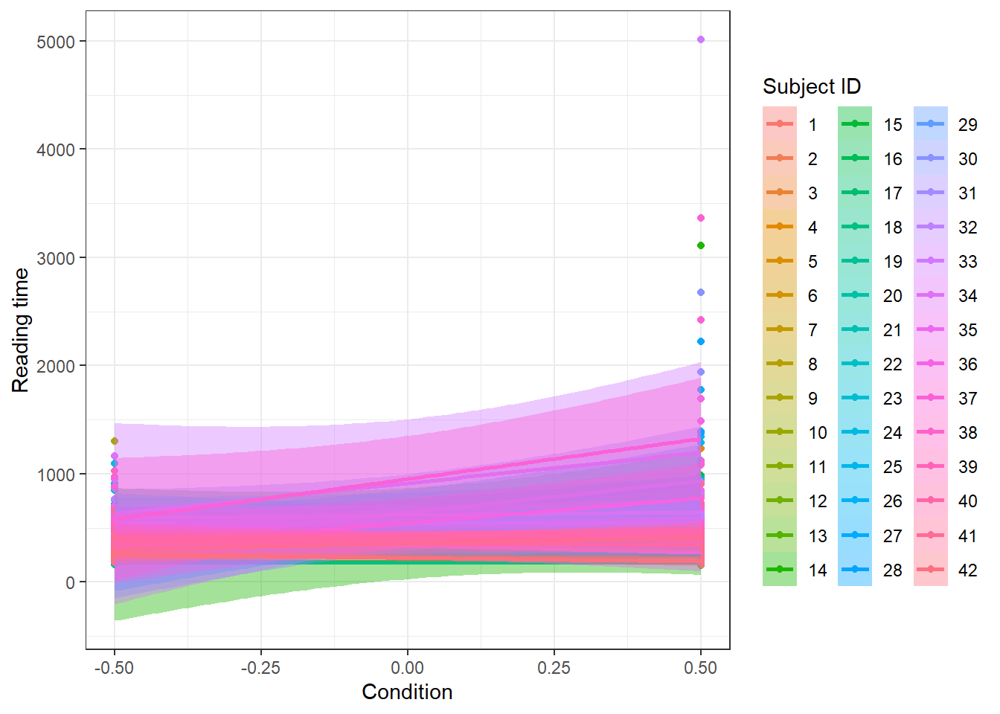
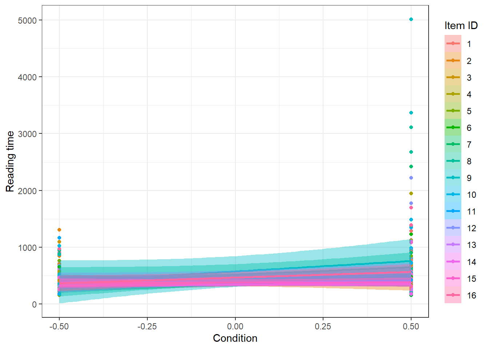
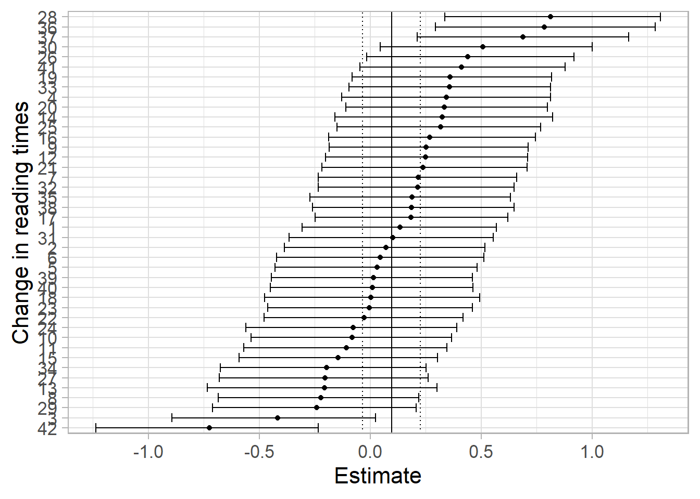
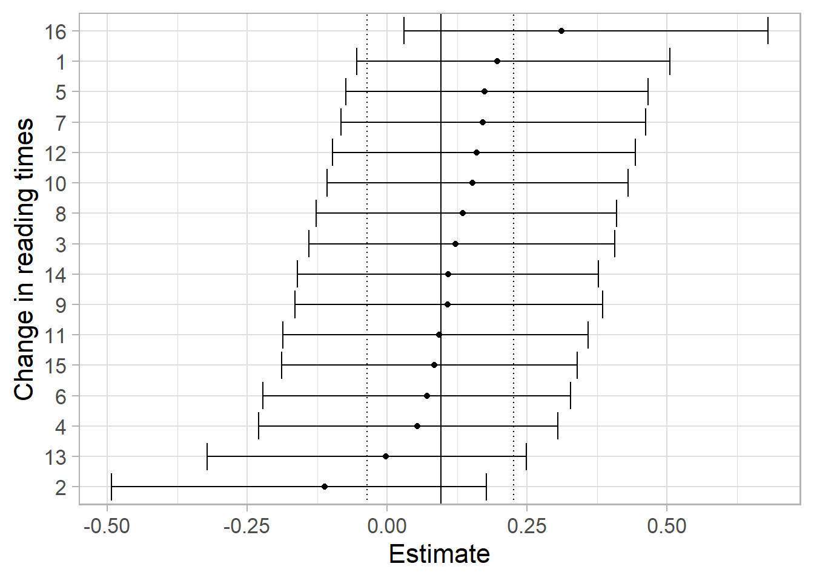

# packages
library(tidyverse) # Graphs with ggplot()
library(knitr) # Tables with kable()
library(brms) # Hierarchical Bayesian models
library(rstan) # Interface to Stan
library(bayesplot) # Model output graphs
set.seed(359)Assignment7
Are subject relatives easier to process than object relatives (shifted log-normal likelihood)?
This is a classic question from the psycholinguistics literature: Are subject relatives easier to process than object relatives? The data come from Experiment 1 in a paper by Grodner and Gibson 2005.
Scientific question: Is there a subject relative advantage in reading?
Grodner and Gibson 2005 investigate an old claim in psycholinguistics that object relative clause (ORC) sentences are more difficult to process than subject relative clause (SRC) sentences. One explanation for this predicted difference is that the distance between the relative clause verb (sent in the example below) and the head noun phrase of the relative clause (reporter in the example below) is longer in ORC vs. SRC.
Examples are shown below. The relative clause is shown in square brackets.
(1a) The reporter [who the photographer sent to the editor] was hoping for a good story. (ORC)
(1b) The reporter [who sent the photographer to the editor] was hoping for a good story. (SRC)
The underlying explanation has to do with memory processes: Shorter linguistic dependencies are easier to process due to either reduced interference or decay, or both.
In the Grodner and Gibson data, the dependent measure is reading time at the relative clause verb, (e.g., sent) of different sentences with either ORC or SRC. The dependent variable is in milliseconds and was measured in a self-paced reading task. Self-paced reading is a task where subjects read a sentence or a short text word-by-word or phrase-by-phrase, pressing a button to get each word or phrase displayed; the preceding word disappears every time the button is pressed.
For this experiment, we are expecting longer reading times at the relative clause verbs of ORC sentences in comparison to the relative clause verb of SRC sentences.
load("df_gg05_rc.rda")You should use a sum coding for the predictors. Here, object relative clauses (“objgaps”) are coded +1/2, subject relative clauses −1/2.
df_gg05_rc <- df_gg05_rc %>%
mutate(c_cond = if_else(condition == "objgap", 1/2, -1/2))Before fitting, also clean the reading times: exclude relative clause verb reading times below 150 ms, since responses that fast probably are an anticipatory button-press instead of actually reading the target word and reacting. Report how many trials this excludes.
n_before <- nrow(df_gg05_rc)
df_gg05_rc <- df_gg05_rc %>%
filter(RT >= 150)
n_before - nrow(df_gg05_rc)[1] 4Reading times can never be shorter than some minimum time (the time needed for basic perceptual other processes necessary for reading). We can capture this by shifting the log-normal distribution away from zero by an additional parameter (ndt, non-decision time). You can now fit a “maximal” model (correlated varying intercept and slopes for subjects and for items) assuming a shifted log-normal likelihood.
Exercise 1
(a) Specify the statistical model and define priors for all parameters in the model, including the additional shift parameter ndt.
Hint: To get a feel for reasonable ranges of values for the µ and σ parameters of a (shifted) log-normal distribution, you might want to simulate log-normal data for different values using rlnorm() and then add a constant shift to it. Also think about what constraints ndt needs to satisfy relative to the observed data for the model to be identifiable, and where the bound for its prior should come from. Should it be extracted from this particular sample, or fixed in advance?
Caution: brms uses a log link for ndt by default (check ?brms::shifted_lognormal), which means that, depending on how you specify the model, the units your prior and posterior for ndt are expressed in may not be milliseconds. Before interpreting or setting a prior for ndt, check make_stancode() for your model to see exactly how ndt is parametrized.
Do I need random effect at all?
# individual
g1 <- ggplot(df_gg05_rc, aes(x = c_cond, y = RT,
color = factor(subj),
fill = factor(subj)))+
geom_point()+
geom_smooth(method = "lm") +
theme_bw()+
labs(x = "Condition", y = "Reading time",
color = "Subject ID", fill = "Subject ID")
g1
# item
g2 <- ggplot(df_gg05_rc, aes(x = c_cond, y = RT,
color = factor(item),
fill = factor(item)))+
geom_point()+
geom_smooth(method = "lm") +
theme_bw()+
labs(x = "Condition", y = "Reading time",
color = "Item ID", fill = "Item ID")
g2
There seems no sufficient reason to use item-level random effects.
Define model
default_prior(RT ~ c_cond + (c_cond | subj) + (c_cond | item),
family = shifted_lognormal(),
data = df_gg05_rc) prior class coef group resp dpar nlpar lb ub tag
(flat) b
(flat) b c_cond
lkj(1) cor
lkj(1) cor item
lkj(1) cor subj
student_t(3, 5.8, 2.5) Intercept
uniform(0, min_Y) ndt 0 min_Y
student_t(3, 0, 2.5) sd 0
student_t(3, 0, 2.5) sd item 0
student_t(3, 0, 2.5) sd c_cond item 0
student_t(3, 0, 2.5) sd Intercept item 0
student_t(3, 0, 2.5) sd subj 0
student_t(3, 0, 2.5) sd c_cond subj 0
student_t(3, 0, 2.5) sd Intercept subj 0
student_t(3, 0, 2.5) sigma 0
source
default
(vectorized)
default
(vectorized)
(vectorized)
default
default
default
(vectorized)
(vectorized)
(vectorized)
(vectorized)
(vectorized)
(vectorized)
defaultprior1 <- c(prior(normal(6, 1), class = Intercept),
# mean of log reading time
prior(normal(0, 0.1), class = b, coef = c_cond),
prior(normal(0, 1), class = sigma, lb = 0),
prior(normal(0, 1), class = sd),
prior(lkj(2), class = cor),
prior(uniform(0, 150), class = ndt, lb = 0, ub = 150))
# full model
file_path <- "brms_model1.rds"
if (file.exists(file_path)) {
model1 <- readRDS(file_path)
} else {
model1 <- brm(RT ~ c_cond + (c_cond | subj) + (c_cond | item),
family = shifted_lognormal(),
data = df_gg05_rc, prior = prior1,
iter = 2000, warmup = 500, cores = 4,
save_pars = save_pars(all = TRUE))
saveRDS(model1, file = file_path)
}
model1 Family: shifted_lognormal
Links: mu = identity
Formula: RT ~ c_cond + (c_cond | subj) + (c_cond | item)
Data: df_gg05_rc (Number of observations: 668)
Draws: 4 chains, each with iter = 2000; warmup = 500; thin = 1;
total post-warmup draws = 6000
Multilevel Hyperparameters:
~item (Number of levels: 16)
Estimate Est.Error l-95% CI u-95% CI Rhat Bulk_ESS
sd(Intercept) 0.05 0.04 0.00 0.13 1.00 1726
sd(c_cond) 0.16 0.08 0.01 0.33 1.00 1594
cor(Intercept,c_cond) 0.19 0.42 -0.69 0.86 1.00 2113
Tail_ESS
sd(Intercept) 1897
sd(c_cond) 1632
cor(Intercept,c_cond) 3164
~subj (Number of levels: 42)
Estimate Est.Error l-95% CI u-95% CI Rhat Bulk_ESS
sd(Intercept) 0.63 0.08 0.50 0.80 1.00 1313
sd(c_cond) 0.39 0.07 0.26 0.55 1.00 2423
cor(Intercept,c_cond) 0.38 0.17 0.02 0.69 1.00 2758
Tail_ESS
sd(Intercept) 1893
sd(c_cond) 3762
cor(Intercept,c_cond) 3487
Regression Coefficients:
Estimate Est.Error l-95% CI u-95% CI Rhat Bulk_ESS Tail_ESS
Intercept 5.20 0.10 5.00 5.40 1.00 774 1497
c_cond 0.10 0.07 -0.04 0.23 1.00 3458 3986
Further Distributional Parameters:
Estimate Est.Error l-95% CI u-95% CI Rhat Bulk_ESS Tail_ESS
sigma 0.59 0.02 0.55 0.63 1.00 5377 4460
ndt 146.54 2.30 141.12 149.78 1.00 3952 2436
Draws were sampled using sampling(NUTS). For each parameter, Bulk_ESS
and Tail_ESS are effective sample size measures, and Rhat is the potential
scale reduction factor on split chains (at convergence, Rhat = 1).Calculate ICC:
Between subject variance: \(\sigma^2_{subj} = 0.39^2 = 0.1521\).
Between item variance: \(\sigma^2_{item} = 0.05^2 = 0.0025\).
Residuals: \(\sigma^2_{e} = 0.59^2 = 0.3481\).
ICC of subjects: \(ICC\_{subj} = 0.1521 / (0.1521 + 0.0025 + 0.3481) \approx 0.30\).
ICC of items: \(ICC\_{item} = 0.0025 / (0.1521 + 0.0025 + 0.3481) \approx 0.005\).
Again, there seems no reason to include item-level random effects.
Exercise 2
Examine the effect of relative clause attachment site (the predictor c_cond) on reading times RT (β1).
Answer: Relative clause has no clear effect on reading times, 95% CI: [-0.04, 0.23] but they vary a lot between subjects.
Exercise 3
Estimate the median difference between relative clause attachment sites in milliseconds, and report the mean and 95% CI. Remember to take the estimated shift \(ndt\) into account when you transform back to the millisecond scale.
Hint: For a shifted log-normal, the expected reading time in condition X is \(ndt + exp(\beta_{0} + \beta_{1}X)\). Because \(ndt\) is a constant additive shift that is the same for both conditions, it cancels out when we compute the difference between conditions, so the difference formula is the same as if we would have a log-normal model.
draws <- as_draws_df(model1)
beta0 <- draws$b_Intercept
beta1 <- draws$b_c_cond
ndt <- draws$ndt
effect <- exp(beta0 + beta1 * .5) - exp(beta0 + beta1 * -.5)
c(mean = mean(effect), quantile(effect, c(.025, .975))) mean 2.5% 97.5%
17.80319 -6.00322 43.58811 rt_objgap <- ndt + exp(beta0 + beta1 * .5)
rt_subjgap <- ndt + exp(beta0 + beta1 * -.5)
c(mean_objgap = mean(rt_objgap), mean_subjgap = mean(rt_subjgap)) mean_objgap mean_subjgap
337.4628 319.6596 Answer: The estimated reading time difference between the two conditions is 17.80ms, 95% CI: [-6.00, 43.59]. The mean reading time in the objective group is 337.46ms, and 319.66ms in the subjective group.
Consider no item-level random effect
file_path <- "brms_model0.rds"
if (file.exists(file_path)) {
model0 <- readRDS(file_path)
} else {
model0 <- brm(RT ~ c_cond + (c_cond | subj),
family = shifted_lognormal(),
data = df_gg05_rc, prior = prior1,
iter = 2000, warmup = 500, cores = 4,
save_pars = save_pars(all = TRUE))
saveRDS(model0, file = file_path)
}
model0 Family: shifted_lognormal
Links: mu = identity
Formula: RT ~ c_cond + (c_cond | subj)
Data: df_gg05_rc (Number of observations: 668)
Draws: 4 chains, each with iter = 2000; warmup = 500; thin = 1;
total post-warmup draws = 6000
Multilevel Hyperparameters:
~subj (Number of levels: 42)
Estimate Est.Error l-95% CI u-95% CI Rhat Bulk_ESS
sd(Intercept) 0.63 0.08 0.50 0.80 1.00 1031
sd(c_cond) 0.39 0.07 0.26 0.55 1.00 2254
cor(Intercept,c_cond) 0.39 0.17 0.02 0.69 1.00 2536
Tail_ESS
sd(Intercept) 2145
sd(c_cond) 3871
cor(Intercept,c_cond) 3123
Regression Coefficients:
Estimate Est.Error l-95% CI u-95% CI Rhat Bulk_ESS Tail_ESS
Intercept 5.19 0.10 4.99 5.39 1.01 669 1394
c_cond 0.11 0.06 -0.02 0.22 1.00 2574 3599
Further Distributional Parameters:
Estimate Est.Error l-95% CI u-95% CI Rhat Bulk_ESS Tail_ESS
sigma 0.60 0.02 0.56 0.64 1.00 4681 4120
ndt 146.55 2.30 141.18 149.78 1.00 3330 1991
Draws were sampled using sampling(NUTS). For each parameter, Bulk_ESS
and Tail_ESS are effective sample size measures, and Rhat is the potential
scale reduction factor on split chains (at convergence, Rhat = 1).bayes_factor(model0, model1)Iteration: 1
Iteration: 2
Iteration: 3
Iteration: 4
Iteration: 5
Iteration: 6
Iteration: 1
Iteration: 2
Iteration: 3
Iteration: 4
Iteration: 5
Iteration: 6
Iteration: 7Estimated Bayes factor in favor of model0 over model1: 19.87539The model without item-level random effects actually performs better.
Exercise 4
Inspect individual differences in the subject relative advantage effect. Are there participants with effects in opposite directions?
by_subj_effect <- data.frame(coef(model1)$subj[,, "c_cond"]) %>%
bind_rows() %>%
mutate(subj = unique(df_gg05_rc$subj)) %>%
arrange(Estimate) %>%
mutate(subj = factor(subj, levels = subj))
ggplot(
by_subj_effect,
aes(ymin = Q2.5, ymax = Q97.5, x = subj, y = Estimate)
) +
geom_errorbar() +
geom_point() +
geom_hline(
yintercept = posterior_summary(model1)["b_c_cond", "Estimate"]
) +
geom_hline(
yintercept = posterior_summary(model1)["b_c_cond", "Q2.5"],
linetype = "dotted", linewidth = 0.5
) +
geom_hline(
yintercept = posterior_summary(model1)["b_c_cond", "Q97.5"],
linetype = "dotted", linewidth = 0.5
) +
xlab("Change in reading times") +
coord_flip() +
theme_light(base_size = 16)
As before, some subjects’ credible intervals cross zero or point in the direction opposite to the group-level estimate, showing that not everyone shows the same (or even same-signed) relative advantage.
We may also look at per-item difference.
by_item_effect <- data.frame(coef(model1)$item[,, "c_cond"]) %>%
bind_rows() %>%
mutate(item = unique(df_gg05_rc$item)) %>%
arrange(Estimate) %>%
mutate(item = factor(item, levels = item))
ggplot(
by_item_effect,
aes(ymin = Q2.5, ymax = Q97.5, x = item, y = Estimate)
) +
geom_errorbar() +
geom_point() +
geom_hline(
yintercept = posterior_summary(model1)["b_c_cond", "Estimate"]
) +
geom_hline(
yintercept = posterior_summary(model1)["b_c_cond", "Q2.5"],
linetype = "dotted", linewidth = 0.5
) +
geom_hline(
yintercept = posterior_summary(model1)["b_c_cond", "Q97.5"],
linetype = "dotted", linewidth = 0.5
) +
xlab("Change in reading times") +
coord_flip() +
theme_light(base_size = 16)
Exercise 5
Do a sensitivity analysis. What is the estimate of the effect (β1) under different priors? What is the difference in ms between conditions under different priors? Does the choice of prior on \(ndt\) also affect the results?
Note: In the sensitivity analysis, model0 is used as the benchmark.
Coefficient (β1)
# model2
prior2 <- c(prior(normal(6, 1), class = Intercept),
# mean of log reading time
prior(normal(0, 1), class = b, coef = c_cond),
prior(normal(0, 1), class = sigma, lb = 0),
prior(normal(0, 1), class = sd),
prior(lkj(2), class = cor),
prior(uniform(0, 150), class = ndt, lb = 0, ub = 150))
file_path <- "brms_model2.rds"
if (file.exists(file_path)) {
model2 <- readRDS(file_path)
} else {
model2 <- brm(RT ~ c_cond + (c_cond | subj),
family = shifted_lognormal(),
data = df_gg05_rc, prior = prior2,
iter = 2000, warmup = 500, cores = 4,
save_pars = save_pars(all = TRUE))
saveRDS(model2, file = file_path)
}
model2 Family: shifted_lognormal
Links: mu = identity
Formula: RT ~ c_cond + (c_cond | subj)
Data: df_gg05_rc (Number of observations: 668)
Draws: 4 chains, each with iter = 2000; warmup = 500; thin = 1;
total post-warmup draws = 6000
Multilevel Hyperparameters:
~subj (Number of levels: 42)
Estimate Est.Error l-95% CI u-95% CI Rhat Bulk_ESS
sd(Intercept) 0.63 0.08 0.50 0.81 1.01 894
sd(c_cond) 0.39 0.07 0.26 0.54 1.00 2340
cor(Intercept,c_cond) 0.38 0.17 0.02 0.69 1.00 2745
Tail_ESS
sd(Intercept) 1958
sd(c_cond) 3749
cor(Intercept,c_cond) 4063
Regression Coefficients:
Estimate Est.Error l-95% CI u-95% CI Rhat Bulk_ESS Tail_ESS
Intercept 5.22 0.10 5.02 5.42 1.01 442 732
c_cond 0.17 0.08 0.02 0.33 1.00 2101 3258
Further Distributional Parameters:
Estimate Est.Error l-95% CI u-95% CI Rhat Bulk_ESS Tail_ESS
sigma 0.60 0.02 0.56 0.64 1.00 5116 4221
ndt 146.55 2.30 141.24 149.80 1.00 3841 1940
Draws were sampled using sampling(NUTS). For each parameter, Bulk_ESS
and Tail_ESS are effective sample size measures, and Rhat is the potential
scale reduction factor on split chains (at convergence, Rhat = 1).# model3
prior3 <- c(prior(normal(6, 1), class = Intercept),
# mean of log reading time
prior(normal(0, 0.01), class = b, coef = c_cond),
prior(normal(0, 1), class = sigma, lb = 0),
prior(normal(0, 1), class = sd),
prior(lkj(2), class = cor),
prior(uniform(0, 150), class = ndt, lb = 0, ub = 150))
file_path <- "brms_model3.rds"
if (file.exists(file_path)) {
model3 <- readRDS(file_path)
} else {
model3 <- brm(RT ~ c_cond + (c_cond | subj),
family = shifted_lognormal(),
data = df_gg05_rc, prior = prior3,
iter = 2000, warmup = 500, cores = 4,
save_pars = save_pars(all = TRUE))
saveRDS(model3, file = file_path)
}
model3 Family: shifted_lognormal
Links: mu = identity
Formula: RT ~ c_cond + (c_cond | subj)
Data: df_gg05_rc (Number of observations: 668)
Draws: 4 chains, each with iter = 2000; warmup = 500; thin = 1;
total post-warmup draws = 6000
Multilevel Hyperparameters:
~subj (Number of levels: 42)
Estimate Est.Error l-95% CI u-95% CI Rhat Bulk_ESS
sd(Intercept) 0.63 0.08 0.50 0.81 1.01 952
sd(c_cond) 0.42 0.07 0.28 0.57 1.00 2422
cor(Intercept,c_cond) 0.39 0.17 0.04 0.69 1.00 1950
Tail_ESS
sd(Intercept) 2328
sd(c_cond) 3808
cor(Intercept,c_cond) 3196
Regression Coefficients:
Estimate Est.Error l-95% CI u-95% CI Rhat Bulk_ESS Tail_ESS
Intercept 5.15 0.10 4.95 5.35 1.01 619 1183
c_cond 0.00 0.01 -0.02 0.02 1.00 8775 4504
Further Distributional Parameters:
Estimate Est.Error l-95% CI u-95% CI Rhat Bulk_ESS Tail_ESS
sigma 0.60 0.02 0.56 0.64 1.00 4553 4031
ndt 146.62 2.26 141.34 149.75 1.00 3740 2532
Draws were sampled using sampling(NUTS). For each parameter, Bulk_ESS
and Tail_ESS are effective sample size measures, and Rhat is the potential
scale reduction factor on split chains (at convergence, Rhat = 1).Comparing \(\beta_1\) across priors:
list(model3, model0, model2) %>%
map_dfr(~
posterior_summary(.x, variable = "b_c_cond") %>%
as_tibble() %>%
select(-Est.Error)) %>%
mutate("Prior for $\\beta_1$" = c("Normal(0,.001)",
"Normal(0,0.1)", "Normal(0,1)")) %>%
knitr::kable(escape = FALSE)| Estimate | Q2.5 | Q97.5 | Prior for \(\beta_1\) |
|---|---|---|---|
| 0.0026375 | -0.0158235 | 0.0211733 | Normal(0,.001) |
| 0.1051948 | -0.0208319 | 0.2231933 | Normal(0,0.1) |
| 0.1707729 | 0.0206976 | 0.3269718 | Normal(0,1) |
And the corresponding difference in milliseconds (ndt cancels out):
list(model3, model0, model2) %>%
map_dfr(~ {
d <- as_draws_df(.x)
diff <- exp(d$b_Intercept + d$b_c_cond / 2) -
exp(d$b_Intercept - d$b_c_cond / 2)
c(mean = mean(diff), quantile(diff, c(.025, .975))) %>%
bind_rows() %>%
setNames(c("Estimate (ms)", "Q2.5", "Q97.5"))
}) %>%
mutate("Prior for $\\beta_1$" = c("Normal(0,0.01)",
"Normal(0,0.1)", "Normal(0,1)")) %>%
knitr::kable(escape = FALSE)| Estimate (ms) | Q2.5 | Q97.5 | Prior for \(\beta_1\) |
|---|---|---|---|
| 0.4668479 | -2.733145 | 3.803366 | Normal(0,0.01) |
| 19.3101161 | -3.591938 | 43.219537 | Normal(0,0.1) |
| 32.3983126 | 3.624490 | 65.712407 | Normal(0,1) |
As in a log-normal model, the posterior for \(\beta_{1}\) and the (implied) millisecond difference change a lot depending on how informative the prior is, especially when the effect is small relative to the data.
ndt
# model4
prior4 <- c(prior(normal(6, 1), class = Intercept),
# mean of log reading time
prior(normal(0, 0.1), class = b, coef = c_cond),
prior(normal(0, 1), class = sigma, lb = 0),
prior(normal(0, 1), class = sd),
prior(lkj(2), class = cor),
prior(normal(50, 50), class = ndt, lb = 0, ub = 150))
file_path <- "brms_model4.rds"
if (file.exists(file_path)) {
model4 <- readRDS(file_path)
} else {
model4 <- brm(RT ~ c_cond + (c_cond | subj),
family = shifted_lognormal(),
data = df_gg05_rc, prior = prior4,
iter = 2000, warmup = 500, cores = 4,
save_pars = save_pars(all = TRUE))
saveRDS(model4, file = file_path)
}
model4 Family: shifted_lognormal
Links: mu = identity
Formula: RT ~ c_cond + (c_cond | subj)
Data: df_gg05_rc (Number of observations: 668)
Draws: 4 chains, each with iter = 2000; warmup = 500; thin = 1;
total post-warmup draws = 6000
Multilevel Hyperparameters:
~subj (Number of levels: 42)
Estimate Est.Error l-95% CI u-95% CI Rhat Bulk_ESS
sd(Intercept) 0.63 0.08 0.50 0.80 1.00 820
sd(c_cond) 0.39 0.07 0.26 0.55 1.00 2156
cor(Intercept,c_cond) 0.39 0.18 0.02 0.70 1.00 2059
Tail_ESS
sd(Intercept) 1777
sd(c_cond) 3467
cor(Intercept,c_cond) 3096
Regression Coefficients:
Estimate Est.Error l-95% CI u-95% CI Rhat Bulk_ESS Tail_ESS
Intercept 5.20 0.10 5.00 5.40 1.01 436 657
c_cond 0.11 0.06 -0.01 0.22 1.00 2312 3347
Further Distributional Parameters:
Estimate Est.Error l-95% CI u-95% CI Rhat Bulk_ESS Tail_ESS
sigma 0.60 0.02 0.56 0.64 1.00 4695 4815
ndt 146.28 2.39 140.73 149.70 1.00 3392 2522
Draws were sampled using sampling(NUTS). For each parameter, Bulk_ESS
and Tail_ESS are effective sample size measures, and Rhat is the potential
scale reduction factor on split chains (at convergence, Rhat = 1).list(model0, model4) %>%
map_dfr(~ {
d <- as_draws_df(.x)
diff <- exp(d$b_Intercept + d$b_c_cond / 2) -
exp(d$b_Intercept - d$b_c_cond / 2)
tibble(
"ndt Estimate" = mean(d$ndt),
"beta1 Estimate" = mean(d$b_c_cond),
"Diff (ms)" = mean(diff)
)
}) %>%
mutate("Prior for ndt" = c("Uniform(0, 150ms)", "Normal+(50, 50)")) %>%
knitr::kable(escape = FALSE)| ndt Estimate | beta1 Estimate | Diff (ms) | Prior for ndt |
|---|---|---|---|
| 146.5515 | 0.1051948 | 19.31012 | Uniform(0, 150ms) |
| 146.2779 | 0.1062270 | 19.56513 | Normal+(50, 50) |
Because ndt cancels out of the difference between conditions, changing its prior mostly shifts the estimate of ndt (and also \(\beta_0\)/\(\sigma\)), but has little effect on \(\beta_1\) or on the millisecond difference between conditions.
Exercise 6
So far ndt has been a single constant shared by everyone. In reality, people probably differ in their non-decision time too. Extend the model so that \(ndt\) varies by subject (ndt ~ 1 + (1 | subj)), and think carefully about what prior to put on it. Keep in mind the log link caution from part (a).
Hint: a prior with mean around 5.5 to 6.5 on the linear predictor scale for \(ndt\)’s intercept, together with a weakly-informative prior on its between-subject SD, could work out well here. Think about why, and what those numbers correspond to once exponentiated back to milliseconds. You also need to to give the sampler some sensible starting values.
bprior_ndt <- c(
prior(normal(5, 0.7), class = Intercept),
prior(normal(0, .1), class = b),
prior(normal(0, 1), class = sigma),
prior(normal(0, 1), class = sd),
prior(lkj(2), class = cor),
prior(normal(6, 0.5), class = Intercept, dpar = ndt, lb = 0),
prior(exponential(1), class = sd, dpar = ndt)
)
fit_shifted_indiv_ndt <- brm(
bf(RT ~ c_cond + (c_cond | subj) + (c_cond | item),
ndt ~ 1 + (1 | subj)),
family = shifted_lognormal(),
prior = bprior_ndt,
data = df_gg05_rc,
init = 0.1,
control = list(adapt_delta = 0.99, max_treedepth = 15)
)normal(6, 0.5)onndt’s intercept looks like it implies a very tiny non-decision time, but it doesn’t because of the log link.6is on the linear predictor scale, and the corresponding non-decision time is \(\exp(6) \approx 403\) ms, so a plausible value for reading. The SD of \(0.5\) means the bulk of the prior mass for an individual subject falls somewhere between \(\exp(5)\approx 148\) and \(\exp(7)\approx 1097\) ms.lb = 0bounds the linear predictor, notndt. Sincendtis already positive after exponentiating, this barely has an effect, it only rules out non-decision times below \(\exp(0)=1\) ms. It is not the same kind of hard bound we used for the fixed-ndtmodel.- The by-subject SD gets a weakly informative
exponential(1)prior, this is a common prior for a group-level SD on a log scale. - Here is no simple way to give each subject’s
ndta per-subject upper bound tied to their own minimum RT. Identifiability relies on the prior being concentrated well below the observed RTs, so implausible regions get basically no prior mass. - A badly-chosen starting point can effect the sampler to sample in an invalid region (where \(Y_{ik} - \mathit{ndt}_i < 0\) for some subject), so it helps to set starting values, e.g.
init = 0.1, instead of leavinginitat its default.